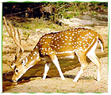
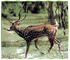
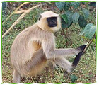

It is hard to imagine as you drive through these forests that this area was originally home to powerful kings and maharajas residing in the large hilltop fort; its meadows were rich agricultural lands tended by farmers and Buddhist monks; and sadhus occupied an extensive cave system in 100 BC. Bandhav-garh means ‘fort of the brother’ and is belived to have been gifted by Lord Ram to his brother Lakshman. In the twelfth century, the fort was given in dowry to the Baghela clan, of which the present Maharaja of Rewa is a direct descendent. After almost continuous occupation, the capital of the Baghelas was moved to Rewa by the nineteenth century and the forests became the hunting reserve of the Maharaja and his guests. Gulab Singh of Rewa shot 480 tigers across his kingdom. By 1968, all the animals in the park had been hunted out and on the day the present Maharaja’s late father gifted the forests to the State, there were no quadrupeds left in the park. Soon after, the forests were declared a National Park and later a Tiger Reserve. The park was extended in 1986 and today it covers 1,161 square kilometres, including the buffer areas, in which village communities exist. Famed over the years for its charismatic male and female tigers that are well documented, it today has over 90 individuals residing within its forests. The park is divided into three separate tourism zones - Tala, Magdhi and Khitauli.
Bandhavgarh National Park is one of the wild life sanctuaries in the Indian state.  Madhya Pradesh. The national park is situated at 197 km away north-east of Jabalpur. This wild life park derived its very name from an ancient fort in the area. Bandhawgarh National Park belongs to the Vindhyan mountain ranges of central India and it boasts to have the highest density of tiger population in the country. Now there are about 46 to 52 tigers one can spot here.
Once a hunting reserve of the royal family of Rewa in more recent times, Bandhavgarh was declared a park in 1968. This is also the site where the famous WHITE TIGERS of Rewa were discovered.
Wandering through the Bandhavgarh national park on an Elephant Back, the chances of seeing a tiger are quite good. Among the other wild attractions include, Nilgai, Chausingha, Chital, Chinkara, Wild Boar and sometimes a Fox or Jackal.
 The forests of Bandhavgarh are the white tiger jungles of the yesteryears. However, no white tigers have been reported from the wild in the last 50 years, and it is believed that less than a dozen have been seen in India in about a hundred years. And yet when white tigers were sighted, it was right here in Bandhavgarh.
Wildlife safari timing in bandhavgarh national park is just like most parks in the country. Timings for entry into, and exit from, the park vary according to the season. In winters, due to the shorter duration of daylight hours, the morning entry time is later and evening exit time is earlier.
There are 04 different zones of the national park from where visitors can Enjoy Jeep safari rides. Vehicles Permitted to enter inside the national park in each shift:
• Tala zone
• Magadhi zone
• Khitauli zone
• Panpatha zone
Open Jeeps with groups of tourists, individuals accompanied by naturalist are allowed into the park at fixed timings. Wildlife safari timing in Bandhavgarh National Park is just like most parks in the country. Timings for entry into, and exit from, the park vary according to the season. In winters, due to the shorter duration of daylight hours, the morning entry time is later and evening exit time is earlier.
The Bandhavgarh National Park remain closed from July 1st to October 15th
SAFARI TIMINGS:
Winter Timings:
Morning à 6:00-11:00am (5hrs)
Afternoon à 3:00-6:00pm (3hrs)
Summer Timings:
Morning à 5:30-10:30am (5hrs)
Afternoon à 3:30-6:30pm (3hrs)
Note :
At Bandhavgarh afternoon shift of Jeep Safari remain close for visitors on Every Wednesday.
Morning & Afternoon both the shift remain close on Holi festival (In the month of March).
There are some necessary details which required for safari reservation:
• Full Name of every visitor
• Age & Gender
• Nationality
• Any Identity proof details like Passport, Driving License, PAN Card or Voter
• I D Card. Visitor is required to carry the same ID proof in original at the time of visiting the national park.